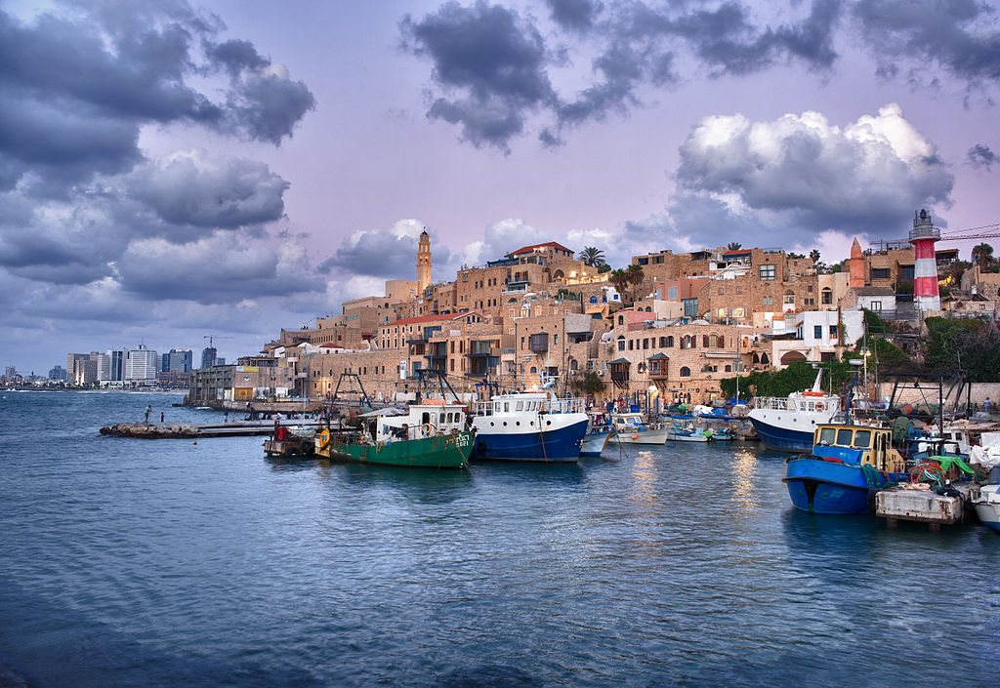
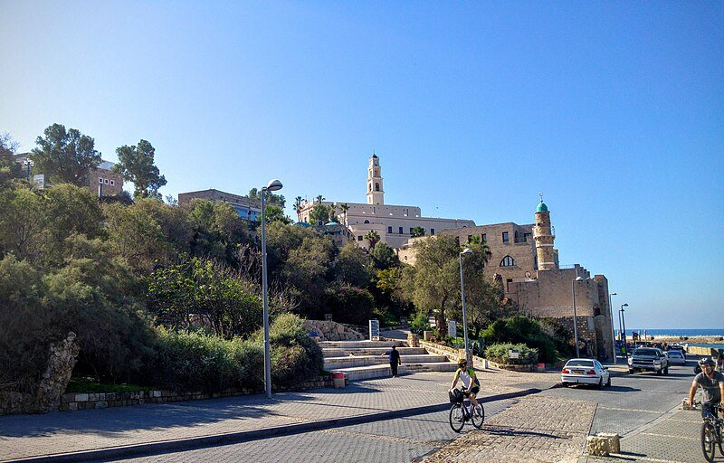
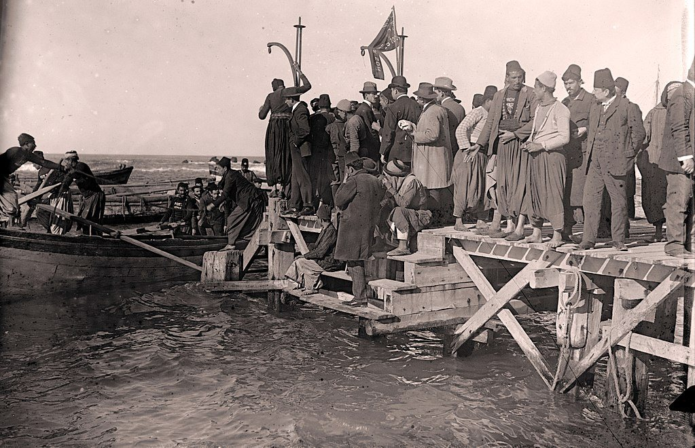
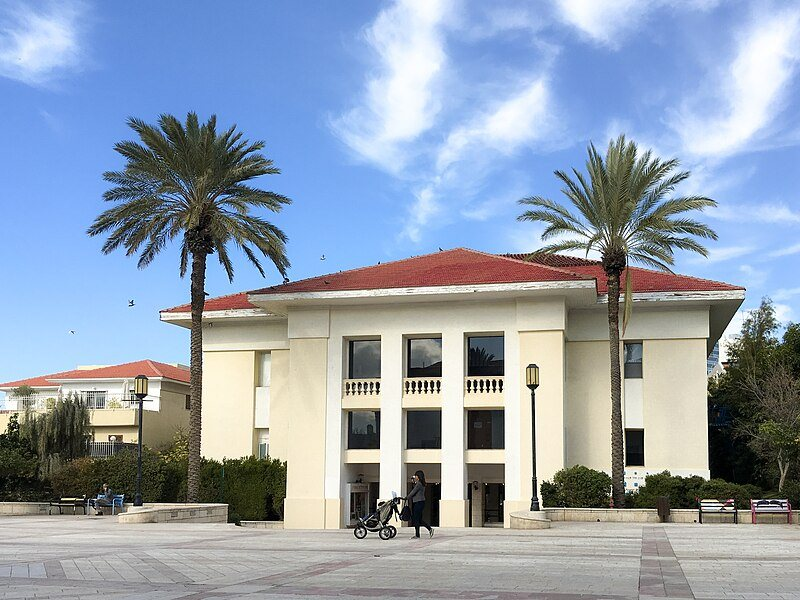
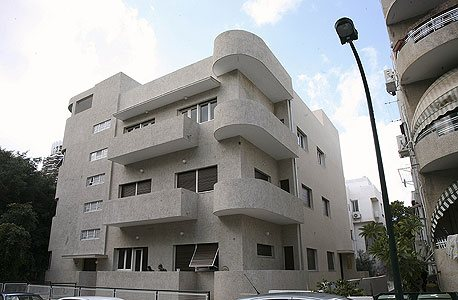
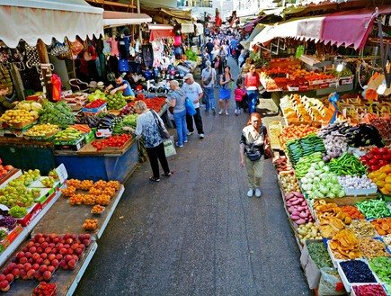
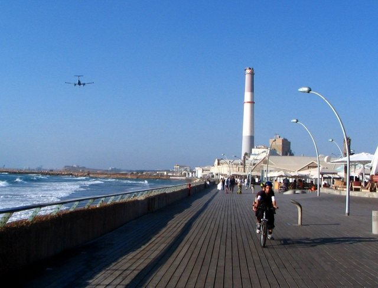
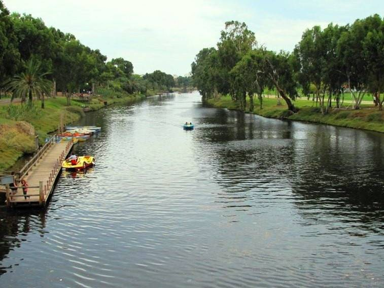
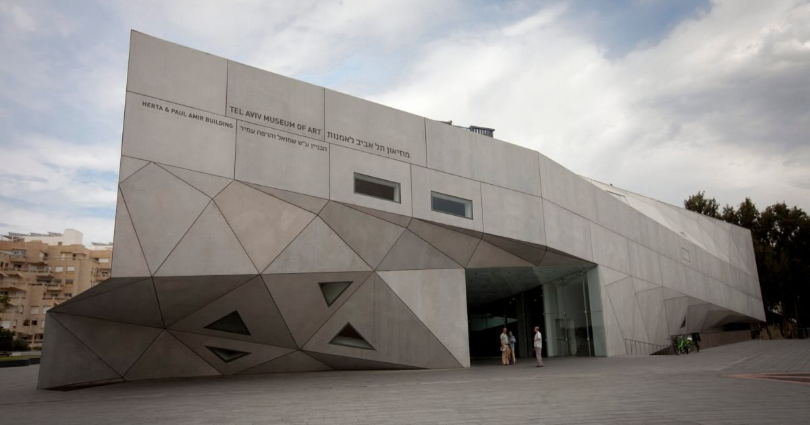
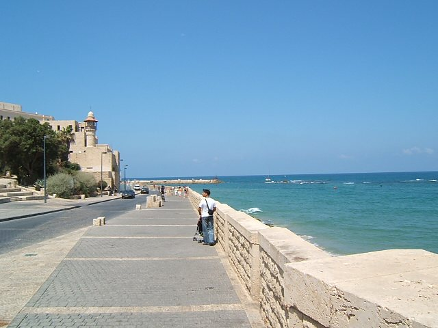

מתוך השידור "מישור החוף המרכזי והדרומי", מערכת השידורים הלאומיתחבל מישור החוף · נושא 3
אחת הערים העתיקות בעולם, ולידה עיר שנוסדה ב־1909 על החולות. היום עירייה אחת, ומרכז הכלכלה, התרבות, הבילוי והעסקים של ישראל.
יפו

יפו העתיקה
קבוצה של אטרקציות מאותו סוג שמוצעות יחד באותו מתחם. ביפו העתיקה: אמנות (רובע האמנים והגלריות), אוכל (מסעדות הדגים בנמל), דת ומורשת (כנסיית פטרוס והמסגדים), קניות (שוק הפשפשים).

בגרות 2023: שלושה קווי מוצרים במתחם יפו העתיקה, ודוגמה לכל אחד. בגרות 2018: זיהוי אתרים בתל אביב–יפו מתמונות.
עצירה לתרגול · עונים בסטודיו
תל אביב

נוסדה ב־1887, השכונה היהודית הראשונה מחוץ לחומות יפו, לפני תל אביב. בתים חד־קומתיים עם חצרות, גלריות ומסעדות. בלב השכונה מרכז סוזן דלל למחול.

יותר מ־4,000 בניינים בסגנון הבינלאומי (באוהאוס) באזורים הוותיקים של תל אביב, כמו שדרות רוטשילד. זה ריכוז גדול במיוחד של אדריכלות מודרנית, ולכן ב־2003 הוכרזה העיר הלבנה אתר מורשת עולמית של אונסק"ו.
בילוי ופנאי

שוק הכרמל, השוק המרכזי של העיר. נחלת בנימין, מדרחוב עם יריד אמנים. שוק לוינסקי, תבלינים ומעדניות.

נמל תל אביב, מתחם פנאי על החוף. מתחם התחנה, תחנת הרכבת הישנה ששוחזרה, ושרונה, מושבת הטמפלרים.הרחבה גם הטיילת מתל אביב עד יפו.

פארק ענק לאורך נחל הירקון: מדשאות, שבילי אופניים, אגם וסירות.
התמונות מתוך השידור "מישור החוף המרכזי והדרומי", מערכת השידורים הלאומית. לפי מחוון 2019: תל אביב היא "עיר ללא הפסקה", עם חיי לילה וחופי ים יפים.
מוזיאונים
| מוזיאון | מה רואים |
|---|---|
| מוזיאון תל אביב לאמנות | מהחשובים בארץ לאמנות ישראלית ובינלאומית |
| מוזיאון ארץ ישראל | ממצאים ארכאולוגיים ותולדות הארץ, ופלנטריום |
| אנו, מוזיאון העם היהודי | סיפור העם היהודי ותפוצותיו (לשעבר בית התפוצות) |
| מוזיאון אילנה גור | אמנות בבית עתיק ביפו |

עוד לחקור: היכל העצמאות, בית בן־גוריון, מוזיאון הפלמ"ח ומרכז רבין.
עצירה לתרגול · עונים בסטודיו
תל אביב, עיר העסקים
למה כנסים בינלאומיים מתקיימים בתל אביב (מחוון 2023): הרבה אולמות כנסים, כמו גני התערוכה · הרבה חדרי מלון ברמות שונות · אירועי תרבות לאורחים · אפשר לשלב את הכנס בנופש · קרוב לנמל התעופה.
תיירות עסקית: ביקור באירועים מסחריים, כמו ירידי סחר ותיירות, כדי להציג חידושים וליצור קשרים.
התערוכה החקלאית הבינלאומית הגדולה בישראל, אחת לשלוש שנים: חידושי החקלאות וההשקיה.
International Mediterranean Tourism Market
יריד התיירות של ארצות הים התיכון. מתקיים בפברואר בתל אביב.
לפי מחוון 2019 הוא אירוע־על: אירוע גדול ממדים וקצר, שמושך מבקרים ואנשי מקצוע מחו״ל.
מסלול יום בתל אביב
| אתר | סוג | למה |
|---|---|---|
| נמל יפו | היסטורי | העיר העתיקה והנמל |
| מתחם התחנה | תרבות | מבנים משוחזרים, חנויות ומסעדות |
| שוק הכרמל | בילוי ופנאי | אוכל, צבע ואווירה |

לפי מחוון 2026: האתרים קרובים זה לזה ומראים פנים שונות של העיר, סיור קליל עם נופך היסטורי ותרבותי. מתקבל גם: נמל יפו, מגדל השעון ושוק הפשפשים.
מושגים ושאלות סיכום · עונים בסטודיו
שאלות מבגרויות · עונים בסטודיו
שאלות מבגרויות · עונים בסטודיו
לסיום
בנושא הבא: השרון והדרום.